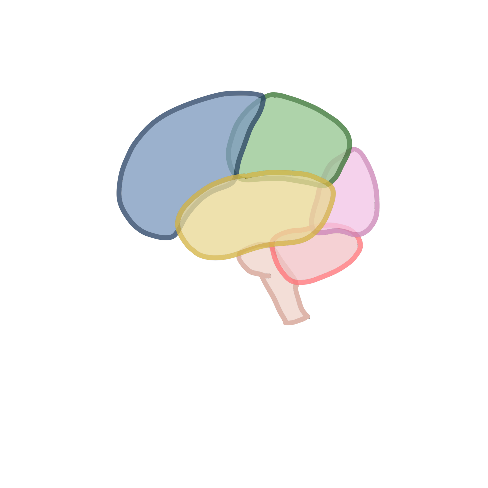
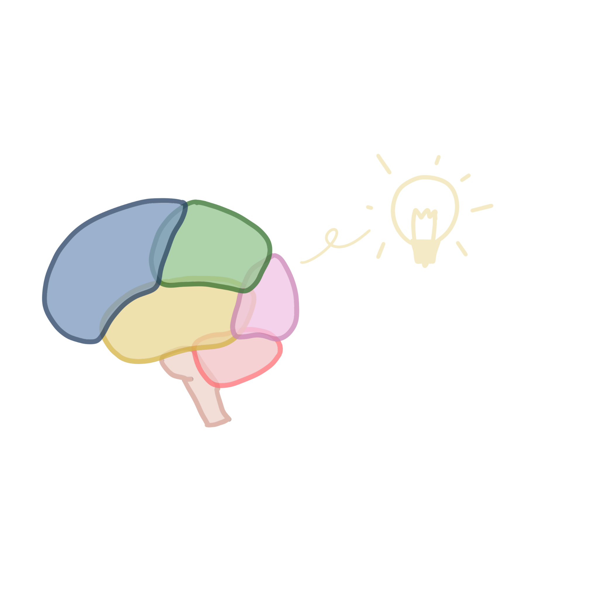
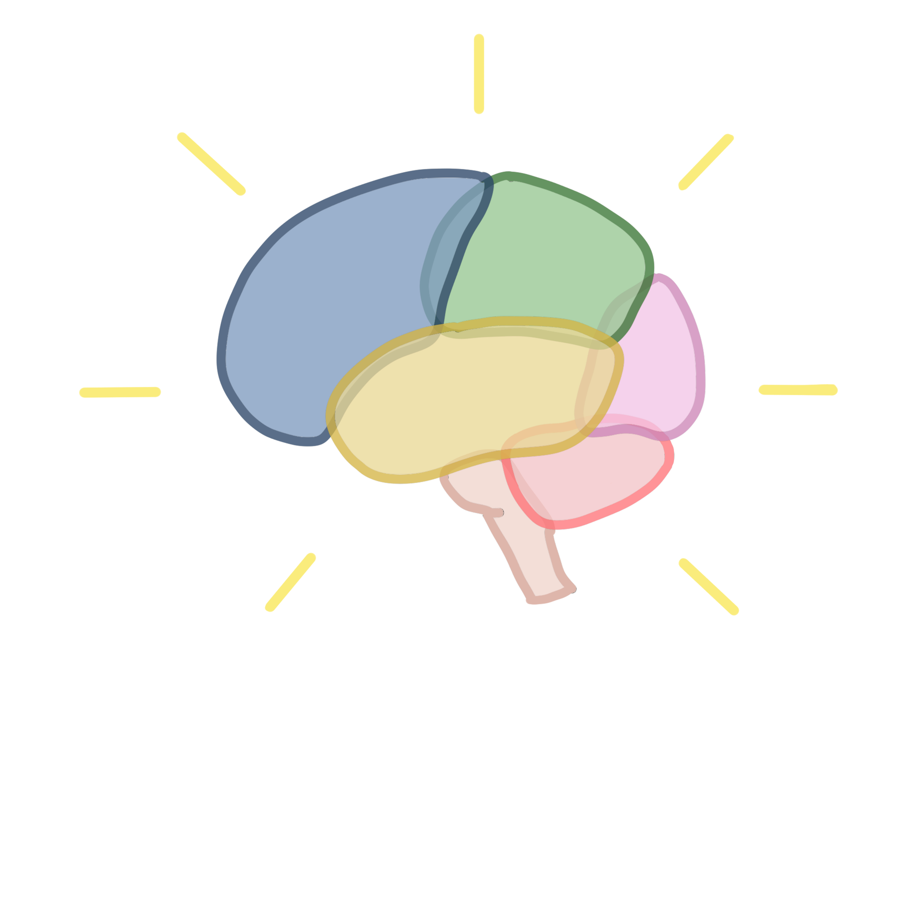
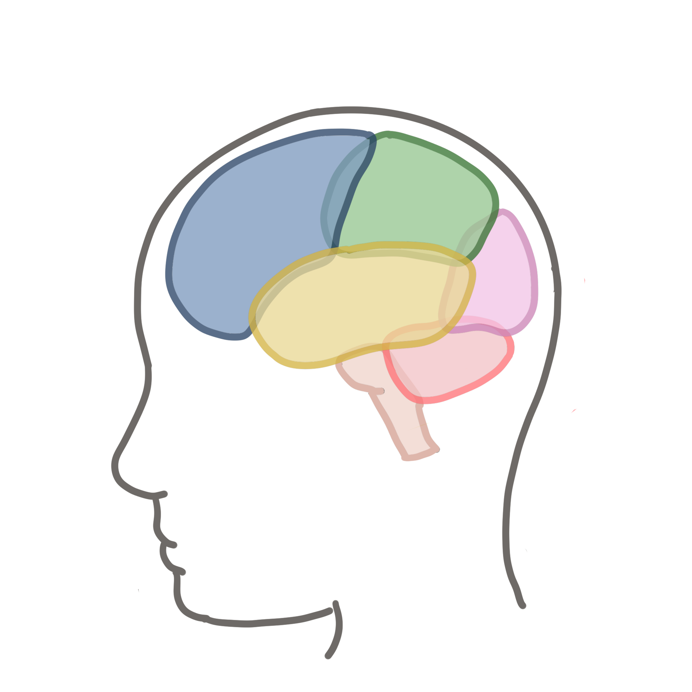

I had been planning to create an abstract brain logo for my personal website icon. The code-generated ones didn't quite work out — but I really loved the style of bold outlines with semi-transparent color fills.
So, along with Bo wen, I explored hand-drawing a brain sketch based on actual brain maps. Isn't it adorable?
We discussed several versions, including:
- The original brain
- A brain with a little light bulb lighting up when a new idea emerges
- A brain that glows on its own when generating new ideas
- A brain belonging to a human with a very round head
My friend's drawings are truly excellent. I've heard that abstracting patterns from real objects is a fairly advanced skill — and it really shows here.




— THE END —
画一个脑子 — 我的网站图标之旅
我之前打算做一个抽象的大脑标志来作为个人网站的图标。用代码生成的不是很满意，但用粗实线绘制外轮廓加半透明色块填充的风格我很喜欢。
所以就和博文一起探索了一下，根据实际的脑区图来手绘出一个大脑简笔画。很可爱对不对！
我们讨论出了好几个版本，包括：
- 初始的脑子
- 产生新想法所以亮起一盏小灯泡的脑子
- 产生新想法所以自己发亮的脑子
- 属于一个头很圆的人类的脑子
博文画得真的很棒。听说从实物抽象出图案是很进阶的能力 —— 这里确实体现出来了。
— 完 —